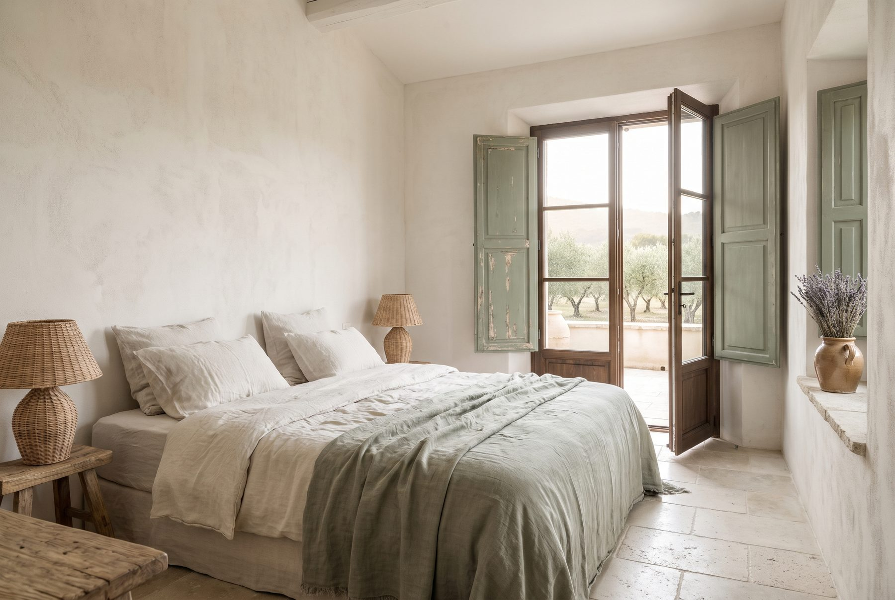
Suite Oliveraie
240 €Le réveil face aux oliviers centenaires. Lit en lin lavé, sol en pierre ancienne, porte-fenêtre ouverte sur la terrasse.
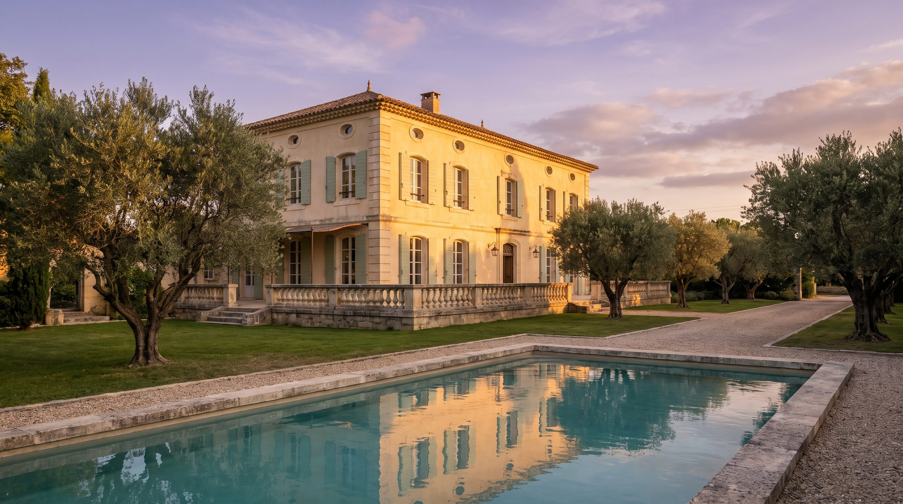
Gordes · Provence
Une maison d'hôtes où le luxe se mesure
en silence, en lumière, en lenteur.
L'histoire
Marie et Thomas ont trouvé la bastide un matin de novembre, volets clos, oliveraie envahie, silence total. Ils y ont vu ce que personne ne voyait : une maison qui n'attendait que la lumière.
Après deux ans de restauration menée avec les artisans du Luberon — tailleurs de pierre, ferronniers, ébénistes — la Bastide Aurane ouvre ses portes en juin. Cinq suites, une oliveraie centenaire, une piscine taillée dans la pierre locale, et la conviction qu'une maison d'hôtes n'a pas besoin de crier pour être inoubliable.
Ici, le luxe ne s'affiche pas. Il se ressent — dans le grain du lin lavé, la fraîcheur des pierres du matin, le temps qu'on ne compte plus.
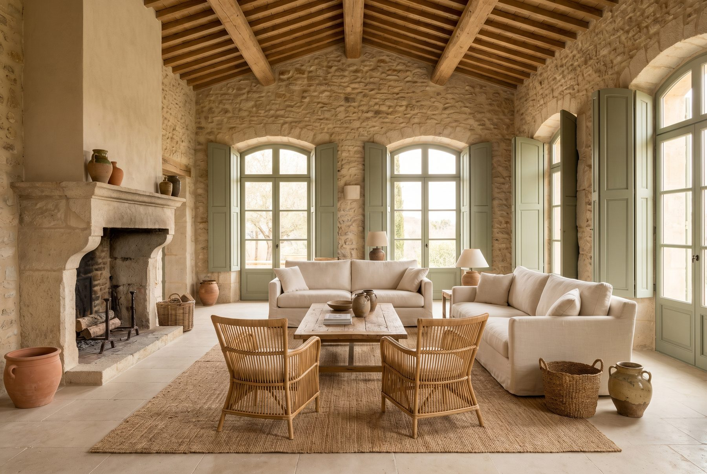
Les suites
Chaque suite porte le nom de ce qu'elle regarde. Pierre nue, lin lavé, lumière du sud — et rien de superflu.

Le réveil face aux oliviers centenaires. Lit en lin lavé, sol en pierre ancienne, porte-fenêtre ouverte sur la terrasse.
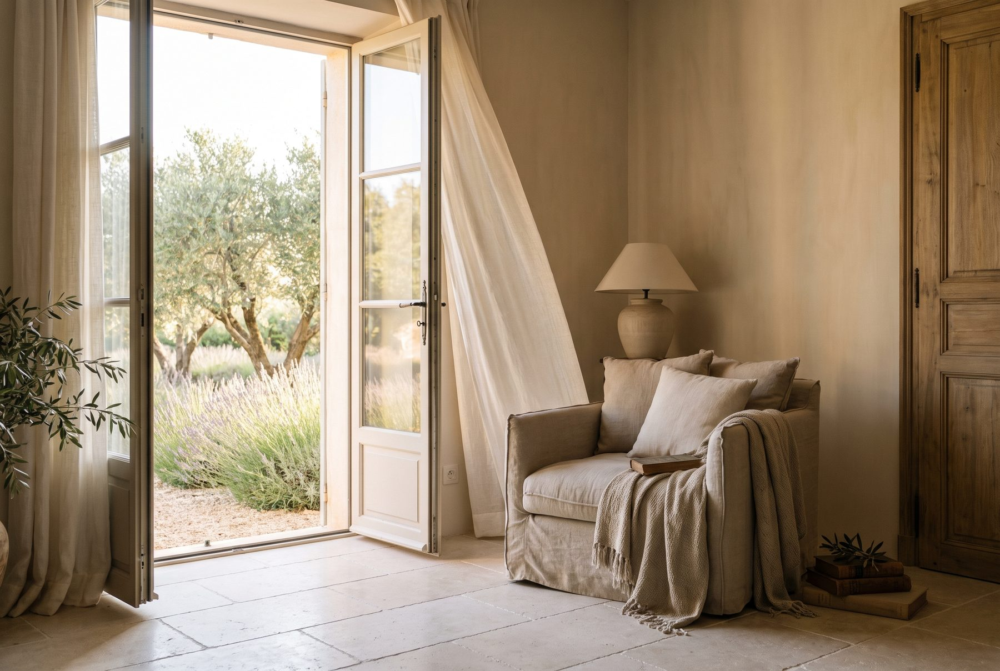
Un angle lecture suspendu entre lavande et lumière. La plus silencieuse des cinq, pensée pour ne rien faire.
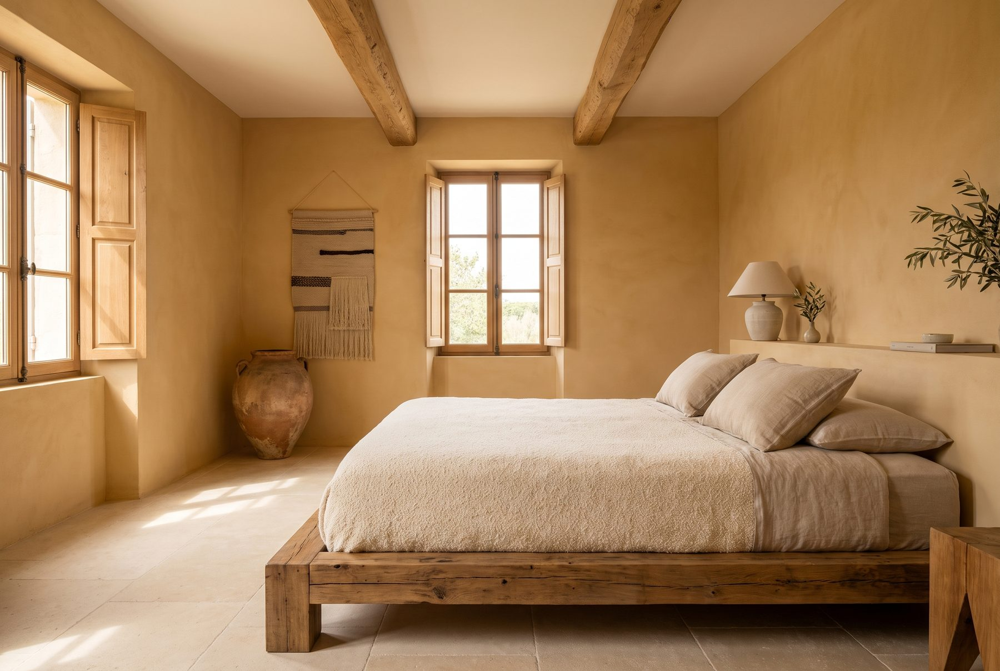
Tons de terre cuite, poutres d'origine, jarre ancienne dans l'angle. La plus chaleureuse, pour les soirs frais.
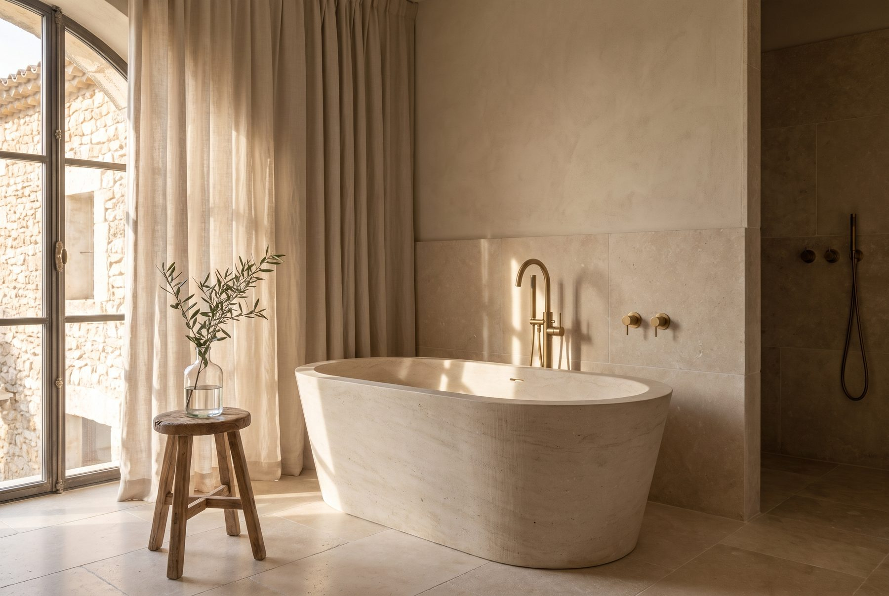
Une salle de bain en pierre taillée comme un bassin, baignoire îlot face à la lumière de l'après-midi.
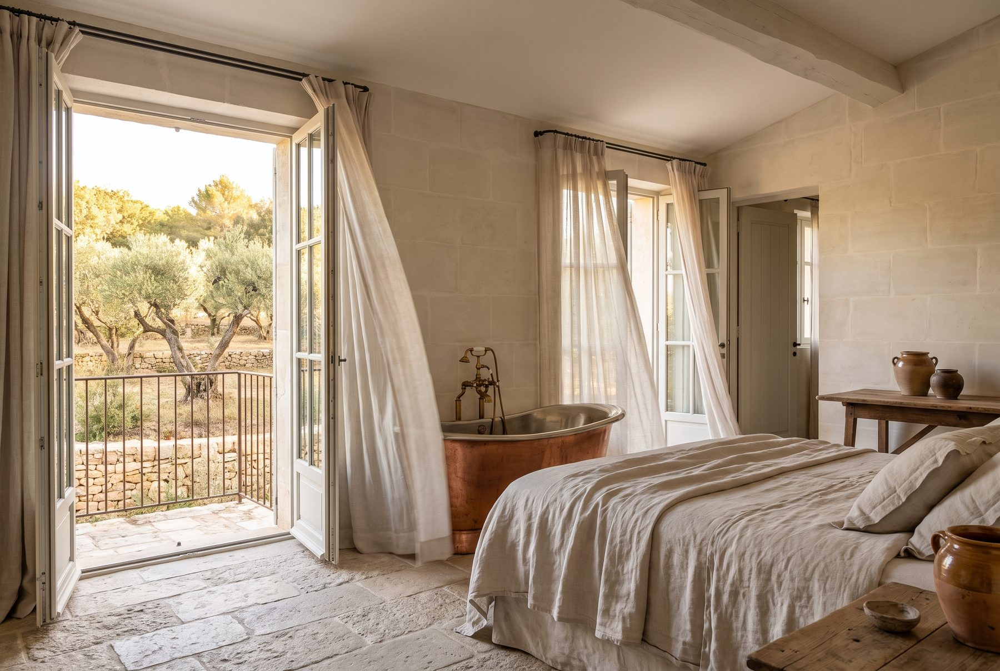
La plus vaste des cinq. Terrasse privée sur l'oliveraie, baignoire cuivre, lumière du matin à l'aube jusqu'au soir.
L'expérience
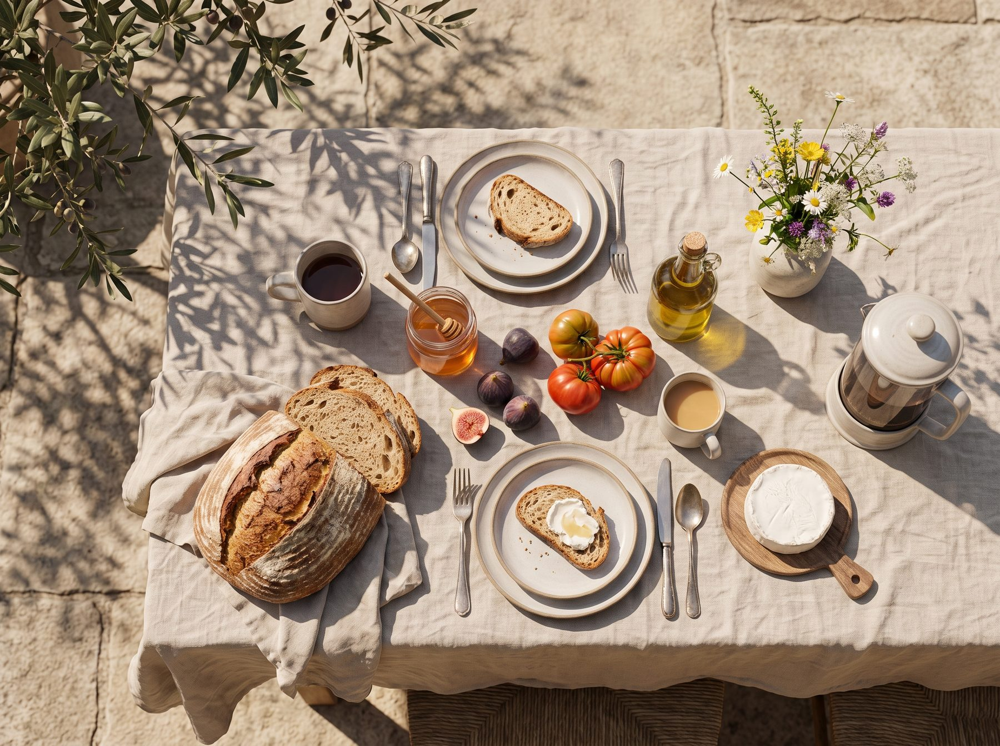
Pain au levain, miel du Luberon, figues, fromage de chèvre, huile d'olive de la propriété. Servi sur la terrasse, à l'heure que vous choisissez — ou pas d'heure du tout.
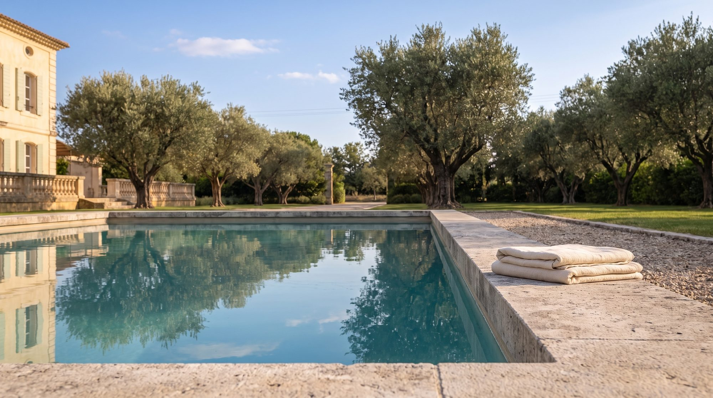
Taillée dans la même pierre que la bastide, bordée d'oliviers centenaires. L'eau reste fraîche même en plein été — le calme, lui, ne bouge jamais.
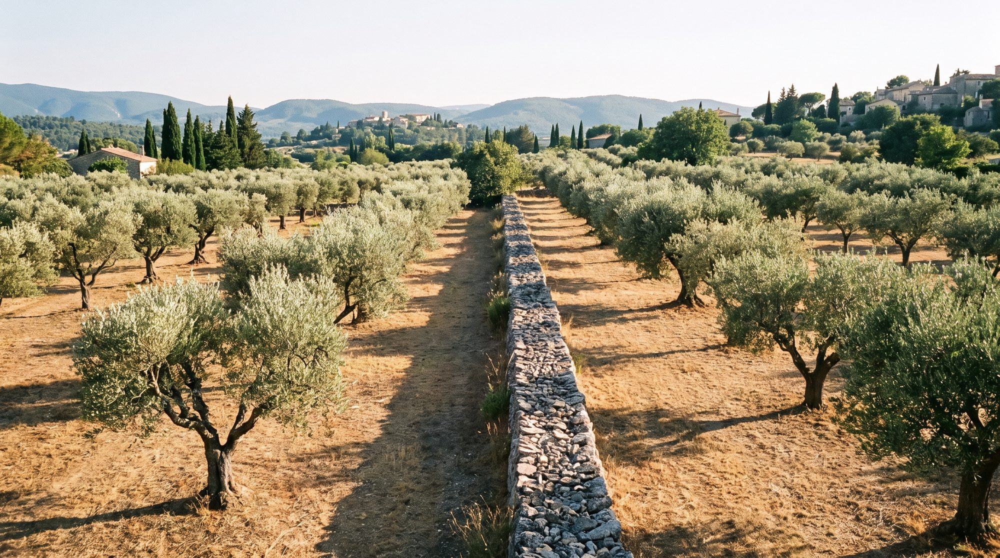
Deux hectares d'oliviers plantés il y a plus d'un siècle. Une promenade, un livre à l'ombre, ou simplement le vent dans les feuilles argentées.
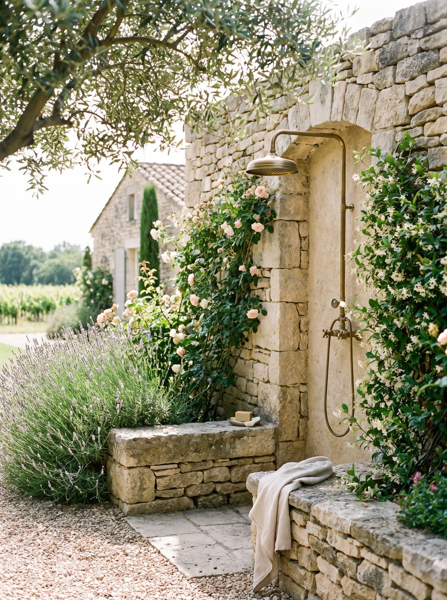
Douche extérieure en pierre, soins sur demande, lenteur organisée. Rien n'est imposé — tout est possible.
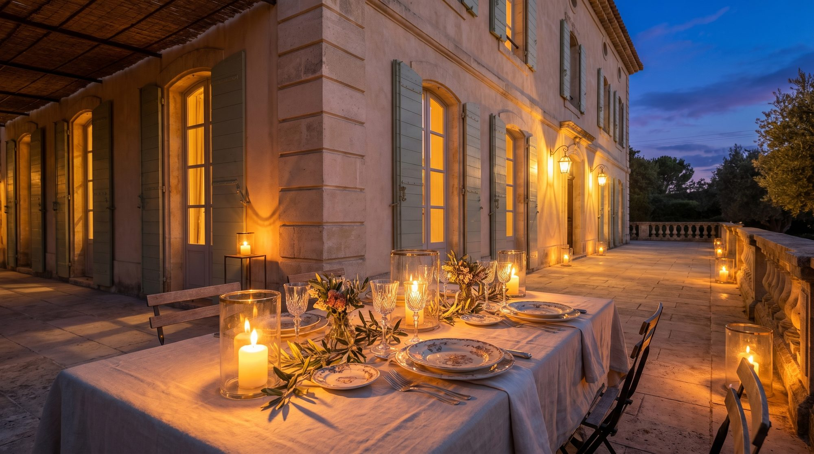
À la tombée du jour, la pierre garde encore la chaleur du soleil. Table dressée sur la terrasse, bougies, vin du domaine voisin.
Réserver
Laissez-nous vos dates — Marie et Thomas vous répondent personnellement sous 24 heures pour confirmer votre suite.
Votre demande a bien été transmise à Marie et Thomas. Une confirmation vous parviendra par e-mail sous 24 heures.
Accès
La Bastide Aurane se trouve à quelques minutes du village perché de Gordes, au cœur du Parc naturel régional du Luberon.
Route des Oliviers, 84220 Gordes, Provence